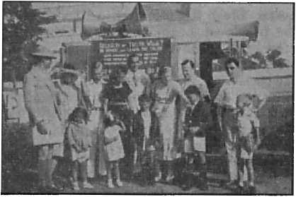
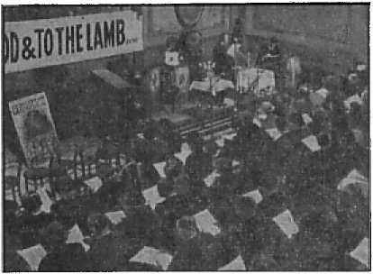

^^^^Tjournal of fact, hope and courage
The key issue of the universal struggle
Moral Principles of the “New Order”
The “Strange Work” in India
Five Cent* a Copy Vol. XXIII No. 588 • $1.25 In Canada and I Published Every
One Dollar a Year March 4, 1942 • Foreign Countries Other Wednesday
Contents
Japan Deceived by the Devil (Part 2)
Westerners Take to the Shinto Racket
The New Government
“From the Burning Fiery Furnace”
“Thy Word Is Truth”
Under the Totalitarian Flag
Moral Principles of the “New Order”
Asia — £55,000,000 in 15 Years — Pahlevi
Surgery — Bombed Before He Was Born
British Comment
Published every other Wednesday by WATCHTOWER BIBLE AND TRACT SOCIETY, INC.
117 Adams St., Brooklyn, N. Y., U. S. A.
Editor Clayton J. Woodworth
Business Manager Nathan H. Knorr
Five Cents a Copy
$1 a year in the United States ?1.25 to Canada and all other countries
NOTICE TO SUBSCRIBERS
Remittances: For your own safety, remit by postal or express money order. When coin or currency is lost in the ordinary malls, there is no redress. Remittances from countries other than those named below may be made to the Brooklyn office, but only by International postal money order.
Receipt of a new or renewal subscription will be acknowledged only when requested. Notice of Expiration is sent with the journal one month before subscription expires. Please renew promptly to avoid loss of copies. Send change of address direct to us rather than to the post office. Your request should reach us at least two weeks before the date of issue with which it is to take effect. Send your old as well as the new address. Copies will not be forwarded by the post office to your new address unless extra postage is provided by you.
Published also in Afrikaans, Bohemian, Danish, Dutch, Finnish, French, German, Greek, Hungarian, Japanese, Norwegian, Polish, Portuguese, Spanish', Swedish, Ukrainian; also special Australian edition in English.
OFFICES FOR OTHER COUNTRIES
England 34 Craven Terrace, London, W. 2
Canada 40 Irwin Avenue, Toronto 5, Ontario
Australia 7 Beresford Road, Strathfield, N.S.W. South Africa 623 Boston House, Cape Town
Entered as second-class matter at Brooklyn, N. Y., under the Act of March 3, 1879.
Japan Ruined by Religion
♦ The knowledge that we are children of gods, that Japan is a country of gods, ruled by a divine emperor, enables the people to accept their hardships philosophically, knowing that Japan is all-powerful and one day will rule the world.—-Professor Tanaka, in a lecture delivered in April, 1931, in Tokyo University.
The Japanese must entertain no illusion concerning the resolution, which the League of Nations will adopt regarding Manchukuo. So long as the world continues to doubt the divine origin of our emperor and the divine origin of all Japanese people, we must expect nothing good. But we must not give up hope, we must not get discouraged. The light of truth is gradually illuminating the way: many people today who used to smile when you mentioned our divine origin are now beginning to change their mind, and the day is not far when the entire world will recognize, not only our moral and material superiority, but also the superiority of our origin, and, amazed at such greatness, will devotiously bow before our divine emperor and before the divine Japanese people, the people of God.—Professor Yamaguchi, Doctor of Jurisprudence, of Tokyo University, July 2, 1932, in Dairen, Manchukuo.
“Japan is superior to all other nations because she is a country of gods.” “Japan is peerless in the world, because of her boundless patriotism.” “Japan is unequaled in her excellence by virtue of her ancestor worship.” —Quotations from a Japanese book entitled “Light Radiates from Japan”.
Worship of a Stupid Old Woman
♦ The new premier of Japan, General Hideki. Tojo, visited the shrine of the Sun Goddess at Ise October 20, 1941, to tell the old lady that he was now on the job. It seems that the Japanese gods don’t know much about what is going on and it is necessary for the statesmen to go around now and then and give them the news. After Tojo had satisfied the old lady’s curiosity he visited a couple more shrines to break the same news, and then got to work.
“And in His name shall the nations hope.”—Matthew 12:21, A.R.V.
Volume XXIII Brooklyn, N. Y., Wednesday, March 4, 1942 Number 586
Japan Deceived by the Devil (/« Four Parts-part 2)
THE people that are always hollering “Give , us more religion” should look upon Japan and think of Shinto, defined as “the way of the gods”. Actually it is the way of the big Devil and the little devils, all working together to prevent the people of the world from learning the truth “To us there is but one God” (1 Corinthians 8:6), not three, nor more, nor less. And regardless of what the theologians have told you about Jehovah, and their ability to order Him around as they please, if you want to survive Armageddon you had better begin right away to believe Jesus’ statement, “My Father is greater than I,” and stop listening to these American and European Shinto-ists that are leading people straight to destruction.
The Shinto arrangement is willing to take on as many gods as suits its fancy. The old lady that is the mother of the works is called Amaterasu Omikami, who was the grandmother, 125 times removed, of Emperor Hirohito. She has shrines all over Japan. One at Los Angeles was dedicated to one of the Japanese gods (of whom there are 8,000,000). It was also dedicated to George Washington and Abraham Lincoln. Shintoism believes in lots of “prayer” before its shrines. The priests and politicians of Japan holler constantly, “What we need is more religion, and more prayer.” Their religion, all of it, is devil religion, and every one of the prayers goes to the Devil; and all this despite the following statement, wirelessed from Tokyo, June 28, 1941, which appeared in the New York Times the next morning:
One problem facing the Christian churches in Japan is the State Shinto cult, on which the Japanese State structure is founded. It demands of every Japanese obeisance before Shinto shrines.
The official Japanese stand, as explained again before the conference, is that the State Shinto cult, though resting on the same basis as the Shinto religion, is purely a secular and national cult and obeisance before Shinto shrines is purely a patriotic ceremony and does not necessarily involve the worship of Shinto deities though it does not exclude it. The Japanese Catholic Church accepted this interpretation and ordered its members to comply, and the Protestant churches are expected to do the same.
There are approximately 350,000 Christians of all denominations in Japan.
The Catholic Church has accepted the dictum of the Japanese government that obeisance before Shinto shrines is purely patriotic and does not necessarily involve the worship of Shinto deities though it does not exclude it. Accordingly it has been legitimized and is now one of the official Shinto churches of Japan. All other churches must do the same or get out, and all others (42) except the Episcopalians and Seventh-Day Adventists have done so. The government < refuses to do business with any organization having less than 50 churches or 5,000 members.
It is just too bad that the early Christians did not have all this wisdom that now enables the “Christian” churches of Japan to sail along without any trouble. These early Christians would not burn incense to the emperor, and suffered death rather than yield to the demand that they do so. If they had only had some Jesuits to help them out, there would have been no martyrs at all, and the “seed of the church” would not have been sown. Isn’t it sad that they didn’t know that burning incense to the emperor was ‘purely patriotic and did not necessarily involve the worship of-him as a deity, even though it did not exclude it’? They were too honest to resort to such a subterfuge, too loyal to God and Christ to compromise their faith and their witness in such a manner. They would not render obeisance to Baal, and they were “not careful to answer” the emperor and all his minions in the matter.—Daniel 3:16.
There are some honest martyrs in Japan today, but they are not in the Shinto brand of “Christianity”. Nor are they allowed to have their “churches” or to give their witness. They are Jehovah’s witnesses, in prison and persecuted, hounded and oppressed, as they are in Germany and in Italy and in all the other totalitarian countries today. And yet the Hierarchy have the colossal nerve today to say that Jehovah’s witnesses in democratic countries are “subversive”. Subversive to what? and for what? They have no foreign “pope” to whom they give primary allegiance; they do not work in the dark as fifth columnists to further the “new order” of the pope and of Hitler and of Hirohito. They do not yield to Baal. But see what the Scriptures prophetically depict.
And Jehu said, Proclaim a solemn assembly for Baal. And they proclaimed it. And Jehu sent through all Israel; and all the worshippers of Baal came, so that there was not a man left that came not. And they came into the house Of Baal; and the house of Baal was full from one end to another. And he said unto him that was over the vestry, Bring forth vestments for all the worshippers of Baal. And he brought them forth vestments. And Jehu went, and Jehonadab the son of Rechab, into the house of Baal, and said unto the worshippers of Baal, Search, and look that there be here with you none of the servants of the Lord, but the worshippers of Baal only. And when they went in to offer sacrifices and burnt offerings, Jehu appointed fourscore men without, and said, If any of the men whom I have brought into your hands escape, he that letteth him go, his life shall be for the life of him. And it camd to pass, as soon as he had made an end of offering the burnt offering, that Jehu said to the guard and to the captains, Go in, and slay them; let none come forth. And they smote them with the edge of the sword; and the guard and the captains cast them out, and went to the city of the house of Baal. And they brought forth the images out of the house of Baal, and burned them. And they brake down the image of Baal, and brake down the house of Baal, and made it a draught house unto this day.—2 Kings 10: 20-27.
The Ministry of Education of Japan, after a year of labor, just recently published a new textbook entitled “The Way of the Subjects of the Emperor”, in which it was explained that it “lies in assisting to maintain the prosperity of the Imperial Reign coeval with heaven and earth”. This is Baal-worship, cited above.
Look magazine, November 23, 1937, contains pictures of fifty Shinto priests praying for the souls of the fish eaten by humans, as Jesus ate them on the shores of Galilee. Every one of these sons of Amaterasu had his hands flat together, and his middle fingers pointed toward the sky, praying to beat whatever it beats. “Give us more religion” was the big idea. Also, more prayer. How can one have more religion unless one has more prayer, and priests to do the praying “0 Baal, hear us”? But see a real good story on this same subject in the 18th chapter of 1 Kings, in the Word of the one and only true God, Jehovah, the Almighty One.
The Japanese Count Okuma said, “The sword is the spirit of the Japanese”; and it is a fact that the ancient name of Japan, when translated, means “Land where the slender blade is sufficient in all things”.1 If you can harmonize that with praying for the souls of fish, go ahead and do it.
In the year 1936 a half million people in Japan spent six hours worshiping a literal sword. The “sacred sword” was transferred in the dark from an old temple to a new one; screens were carried to conceal it from all eyes and “in dead silence troops presented arms and the multitude bowed to the ground” before what faithful King Hezekiah would have contemptuously called “Ne-hushtan” (2 Kings 18:4), which means, in effect, nothing but a bunch of junk.
No wonder that the picture of General Hayashi, Japanese War Minister, a few years back, was published over the information that he was “troubled by spirits” and that he had “ordered an overhauling of his house by workmen, and purification by Shinto priests, to drive out ‘evil spirits’ which haunt his official residence in Tokyo where four predecessors contracted mysterious illness”.
It seems that these gods (really demons, devils) that the Shinto “Doctors of Divinity” want the whole world to worship are of such disposition that after one has approached one of their shrines one is expected, besides closing one’s eyes and bowing one’s head, to clap one’s hands. The object of this is to soothe the fears of the god that one might stick him with one’s sword, and if one claps one’s hands one could not at the same time possibly clasp a weapon.
It seems that the Shinto priests tag along behind the Japanese armies, “hurrying from corpse to corpse, ‘blessing’ the soul of each soldier in a brief Buddhist ‘mass’ ” (says the New York Times, March 4,1938); and also, just before the attack on Pearl Harbor both houses of the Japanese legislature proclaimed solemnly: “In profound appreciation of their illustrious services (the House) hereby expresses condolences to the officers and men killed on foreign land and at the same time voice deep sympathy to the wounded.”
It must be a great comfort to a man after he has been turned into what the Scriptures describe as “dung upon the earth” to receive condolences. But it makes good business for the priests. Nine years earlier priests in Japan were having hard times. Many of them had to actually go to work, farming. “Priests have taken to cultivating temple lands to raise food for themselves and their families” (Philadelphia Inquirer, September 11,1932), but, what with praying for the souls of fishes and the corpses sprinkled around over China and elsewhere, they can manage to get along in the Shinto business without any serious trouble.
Anticipating the present situation was a statement in the New York Sim, December 13, 1940, under the headings “Churches Given Over in Japan; American-owned University and Hospital Also Change Hands Under New Law”, which, in the first paragraph, contained the explanation: “Major American, British and Canadian church properties, valued at millions of dollars, are in the process of being turned over to the Japanese, foreign church officials announced today, as a result of Japan’s recently enacted religious law.”
Korea, as all know, is under Japanese rule, and being well ruled, too, according to stories permitted to come through from there; but see what happens when Shinto gains control:
The Korea Methodist Church commission issued a Renovation Manifesto in October, 1940, announcing among other interesting things:
A-4. We shall prohibit democracy, which is in opposition to the national structure of our Empire.
A-6. We shall firmly resist the principle of freedom, as it runs into effeminacy and indulgence.
C-2. Military Training, (a) We shall include military training in the theological school, (b) In all middle and higher schools we shall place added emphasis on military training.
C-3. Theological Education. We shall see to it that in our theological education the gospel teachings and example of Jesus shall be separated from the false doctrines traceable to its course of Jewish history and western culture, and a Japanese gospel clarified on the basis of Oriental sacred writings and philosophy.
This ought to interest the large body of Methodists in other places besides those under the iron heel of Japanese militarists, who imagined all along that the Methodist church stands for democracy, freedom, conscientious objection to war on the part of some, and that the Bible alone is the Word of God, without any need of being “clarified” with “Oriental sacred writings and philosophy” (demonism), every line of which is antagonistic to “this gospel of the kingdom” of Jehovah God taught by Christ Jesus and by all His truly faithful followers.
Yosuke Matsuoka, now 62 years of age, came to the United States at the age of 9, lived for a while at g,Methodist mission, and then for many years was in the home of a Scottish lady, Mrs. Isabelle Dunbar Beveridge, where he was treated as a son. Years later he stated, “While I am a Christian, I am a Matsuoka Christian. I do not believe in a lot of things that they have attached to the regular sects in America and Europe.”
At 22 he was graduated first in his class at the University of Oregon Law School; and although, up to that time, the No. 1 student was made valedictorian of his class, Matsuoka was discriminated against and the No. 2 student was given the honor. Matsuoka, conscious of the slight, packed up, went back to Japan, and since that time has filled almost every important post in the empire, up to and including that of Foreign Minister.
When Matsuoka returned to Japan, after destroying the League of Nations, which he did by announcing to it Japan’s withdrawal from it and its determination to run Manchuria (and Asia) to suit itself, his first act was to drive to the double bridge entrance to the Imperial Palace and there “pay homage to the presence of the living Emperor and to the Ancestral Spirits Enshrined within”. In other words, a Matsuoka Christian is as nearly like a Korean Methodist as one idolater is like another.
Came December, 1940. Admiral Kichi-saburo Nomura was about to depart as the new Japanese ambassador to the United States. Japanese Foreign Minister Yosuke Matsuoka was one of the speechmakers at the send-off. He then declared that if the United States entered the World War, Japan would fight the United States and that would mean “Armageddon and total destruction of our culture and civilization”. He doesn’t understand that Armageddon is an act of God, but he still remembers something of what he learned in Oregon.
Came March, 1941. Japanese Foreign Minister Matsuoka was in Berlin, telling at his press conference that he had dreamed' of the “new order” in Europe and Asia for thirty years. Three days later he was closeted with the pope. You might like to know what they talked about; and the pabulum fed to the public thereafter is so characteristic of the newshounds that hang around the Vatican that it is repeated herewith and certain words are put in italics to show what the public can expect in straightforwardness from the outfit that makes its headquarters at earth’s biggest lie factory:
Authoritative Vatican quarters understood that the pontiff expressed pleasure over recent statements attributed to Matsuoka that Japan always believed in peace.
The pope was said to have outlined to Matsuoka the points in his Easter day broadcast which will deal with peace. He was said to have expressed hope that peace might be negotiated before spring war offensives started.
Matsuoka was said to have expressed to the pope Japan’s willingness to collaborate in efforts to prevent extension of conflict. He was said to have expressed willingness to support proposals for European peace provided they would not be unfavorable to Japan’s allies.
At their interview the pope presented Matsuoka with “the annual medal of his pontificate, executed in gold”; and though Matsuoka would not tell the reporters what they talked about, he did say:
The Holy Father had the kindness to receive me and to engage me in a long and most earnest conversation. Naturally, I cannot enter into details of our interview, but you may be sure that I received the most profound impression from it. More than that, you can say that it was the deepest impression made on me in all my life, and I think it will remain so forever.
Just a month later, back in Tokyo, Matsuoka told the reporters that if the United States became involved in hostilities with Germany, regardless of whether war was declared, Japan, in that case, would automatically be at war with the United States. What since happened shows that he told the truth.
Where Does the Pope Stand?
The report .of this conversation between Japan’s Foreign Minister and the pope is of real interest to Americans since the attacks on Pearl Harbor and Manila. It is very much to the point, therefore, that everybody who is interested should read the following, which is from the Philippine Magazine, published in Manila, in January, 1941:
The Jesuit organization in the United States poses generally as liberty-minded, democracy-minded. Its publication, patriotically entitled America, plays the role of a patriotic defender of constitutional rights and of American national interests.
Yet, since the beginning of the national defense program in the United States there has hardly been an issue of America that has not in one way or another animadverted on the program. One editorial declared:
“Now is the time for all good men to be sane. Nightmares are in the morning newspapers. Hysterics leap out of the evening dailies. Bugaboos ..spring out of the radio cabinet. Spokesmen scream wildly. Writers burst blood vessels in their vehemence. We the people, are bewildered. We must keep calm. We must seek the truth. We must not be fooled. We must think, coldly, shrewdly. The United States is rapidly arming, and that is good. We need airplanes, 50,000 of them, and a million men to handle them. We need a navy and we need an army. We should not be late as France and England were late. We are protecting ourselves. What then? We are going to be so strong that no nation will dare to pick on us. But being so strong, will we pick on another nation ? Who is going to fight us? Or whom are we going to fight? And where? And when? And Why?”
Yes, why? Wouldn’t it be so much better, per majorem dei gloriam, if the Fascists won the war? Let’s see what would be the results of a Nazi victory.
In the first place, British rule over a large part of the world would be destroyed. And the British are a nation of liberals, scoffers, Protestants. The old Irish in the Jesuits could rejoice over such a victory!
The victors would be: Germany and Italy, with their friends and de facto allies. Spain and Portugal. France, of course, would remain under Petain or some other disciple of the Jesuits. And under the pressure of the four nations so closely linked with the Holy See—Italy, Spain, France, and Portugal— Germany, half of which with the annexation of Austria and Czechoslovakia is Catholic, would in the end see the advantage of an unholy alliance with a Jesuit-controlled Vatican.
Europe, once again, would be dominated by the “Church”, Hitler, himself, probably, but certainly his successor, would realize the importance to him of a compulsory “Catholicism” as a stabilizing factor in an unquiet society,—and unquiet it* would remain until the people were once again brought to accept dictatorial control as a Divine Institution. Generalissimo Franco, with his paladin’s dream of re-establishing the old Spanish world empire, would be gladly assisted by Hitler and the “Church” in Central and South America. The United States, possibly defeated in the Pacific by Japan, might shrink to a third-rate power, with Coughlin and the Hague gang, imposed by the world-dominating Fascistclerical ring, in control.
So, for God’s sake, do not arm, America, because if you are strong, and make England strong, this fine scheme will never materialize! And that is the only plan that would guarantee peace—so declare the Jesuits.
“If Christ reigned wholly jn England, France, Germany, and Italy, there would be no war on land or sea or in the air; none in the printed and spoken word; none in human hearts”—
so said the Jesuit organ, America. Christ (meaning the Roman Catholic Hierarchy) once reigned over all Europe, but this neither stopped nor prevented wars. The Catholic nations fought each other, and they even fought the Pope! Europe did not have to wait for the Reformation to start out on the bloody path of war.
Catholics being in the minority in, the United States, the Jesuits there are strong for “democracy”.
“We will not be happy when we let totalitarianism in by the back door,”
said America (issue for May 25, 1940). But where Catholics are in the majority, the story is quite different.
America itself stated:
“Catholics hold that there exist countries where Church and State may be united without violating the least of human rights. Such circumstances exist because of overwhelming religious unity, coupled with national tradition, as in the case of the newly concluded agreement between the Vatican and the Government of the Republic of Portugal.”
It is therefore—for the Jesuits and other sections of the hierarchy as a whole-—not a matter of principle whether or not state and church should be allied. It is a matter of opportunism. And here in the Philippines, the good Fathers sense the opportunity as national independence nears.
It is of the highest importance to the preservation of the liberties which America brought to the Philippines to watch Jesuit propaganda in this country.
In October, 1937, the Associated Press brought the news that it had been informed by “a reliable Vatican source” that the Holy See, in carrying out its campaign against “Bolshevism”, had—■ “instructed its hierarchy and missions in the Far East to cooperate with Japanese action in China”.
Rome immediately denied this news dispatch (which most probably came from Monsignore Pucci, Vatican informer to the American press), but Tokyo did not deny it. And the Associated Press not only reaffirmed the absolute truth of its story, but revealed the fact that it had asked for and received complete verification before sending out the original. Aside from this—denied—statement, the Vatican, strangely enough, has never disclosed just where it stands on the question of the Japanese wars of aggression. The friendship between Japan and the Vatican is motivated, obviously, by their closely-linked desire to see British and American power abolished, and, on the part of the Vatican, to clear the way for a more aggressive “catholifieation” of the world.
According to its own spokesman (Theodore Maynard, in The American Mercury, October, 1941), “the Church is always ready to make what terms it can with any government.” That is why it is in business, and why the Scriptures (Isaiah 23:15-18 is one of many) refer to it as a harlot; that is, it is unfaithful to Christ.
Some of the sects that were operating in Japan pulled out and went home because of the new church legislation; but it suits the Roman Hierarchy all right. The Brooklyn Tablet voices its satisfaction in these words:
Giving legal personality to the Church for the first time in Japanese history is, of course, of the first importance. It also will be very helpful to have regularized all matters where the Church has contact with the civil sphere. It is really a great achievement for the Church, particularly because it adds to its prestige, which has always been high in Japan. This is a point which perhaps is not thoroughly appreciated in western lands. The Japanese are an orderly people. They are particular about details and they like to have matters clearly set down. Moreover, they have a tremendous devotion to the Japanese State and the highest respect for its actions. Now that the State officially gives legal status to the Church, the Japanese people will give to Catholicism all the greater respect and appreciation. Moreover, this decree permits the Church to enter more thoroughly into the life of the nation, since now it is nationally recognized.
Not sensing that the present world war is of Jesuit origin, the Scottish Rite News Bureau gave out some very valuable information when it said (as reported in The American Guardian of January 21, 1938):
Japanese Hope to Get Support of Catholics in War
Among the Christian denominations which have made rapid advance in Japan is the Roman Catholic Church. In this respect, the converts, it is stated, will publish pamphlets in five languages and distribute them among the Catholics of the world, for the purpose of gaining support for Japan as against China. The propaganda will be based largely upon Japan’s economic necessities, and particularly upon its need for more arable land.
Prominent among Japanese Roman Catholics are Rear Admiral Yamamoto and former Washington Ambassador Debuchi, it is claimed.
Now that Japanese Catholics are to spread propaganda and Japan has assumed a Fascist form of corporate control of its finance and commerce, thus following the mode of Mussolini and Franco in Spain and leaders in other strongly Roman Catholic countries, many wonder what other significance may be attached to the recent pact among the Fascist powers against the democratic countries. It will be recalled that recognition de facto of Franco has been made by the Vatican, a sovereign power.
The New York Herald Tribune, in a dispatch from Rome under date of October 7, 1941, claims that peace in the Orient was the topic of conversation when President Roosevelt’s private ambassador called at the Vatican in the fall of 1941. The same issue of the same paper, under a Washington headline “Tokio More Cordial to Vatican”, says, “The Japanese government has become more cordial to the Catholic Church in the last six months than at any time in recent years.” This might all be true, and is in accord with the new’s published years ago that the present emperor of Japan visited the Vatican in his youth and was there baptized as a Catholic. He probably figured that it could do no harm for him to add one more god to his list of 8,000,000 gods recognized in his homeland.
The pope has evidently been pretty well posted as to what would take place in the Orient. For example, there is that United Press dispatch from Vatican City that, on October 20, “Pope Pius discussed the Far Eastern situation today with third secretary Kanayama of the Japanese embassy (at Vatican City). The secretary is a Catholic. The Pontiff earlier received several German officers.”
It is but natural that those who have made a living all their lives by lying about Almighty God, and working the “purgatory” and “eternal torture” rackets to a finish, should shine up to the statement of Ex-Premier Baron Kiichiro Hiranuma, that—
Buddhism, Confucianism, Christianity and Islam were introduced to this country one after another, but they have all been harmonized with the native religion, Shintoism. Harmony with the way of God or Shinto lies in the path of the national assistance to the sovereign, which should be followed by every subject of his majesty the emperor. Where there is the way of God there is the genuine spirit of the national unity.
One cannot say just what definite instruction the two priests mentioned below (in some San Francisco paper) had received, but it is mighty interesting that the first two fifth columnists reported in the Japanese-American war were Roman Catholic priests. That shows where their sympathies were, and is good evidence that they had received the same kind of instruction.
♦ Roberto Farinacci, former secretary of Italy’s Fascist party, is reported by Time magazine as having said, “Today the great majority of Catholics constitute a bloc in the Axis spiritual forces. In America it is not true that the clergy is on Roosevelt’s side.” Farinacci surely knows what he is talking about.
If people are working together for a common end (world control in this instance) it is hard for them to conceal their sym-p a t h i e s for each other. So it was that one of the very first governments in the world to rec
assist xn
tions to the German Foreign Minister von Ribbentrop. Why did he do that? Even the reporters could not figure it out. It was evidence of the Pacelli-Hitler-Japan conspiracy underneath.
Yet again, when Japan wanted to move toward Singapore, the pope’s “good marshal” Petain let him into Indo-China, the alibi being that this was a defensive move to prevent British seizure. The Japanese knew better; Petain knew better ; so did the pope. It was all part of the grand conspiracy.
Further, former King Leopold of Belgium is a Roman Catholic; hence a good betrayer of human freedom. On the occasion of the anni-versary of the king’s christening, Emperor Hirohito (himself also chris-tened, evidently) sent him his felicitations. This “aroused considerable attention in diplomatic q u a r-ters”. The reporters did not dare say why, but it was because both are at heart Roman Catholics and in the joint conspiracy for world dominion.
attacked German
“Thus. American destroyers, as
Manila Reports Fifth Columnists
By United Press
MANILA, Dec. 11.—The Bulletin reported today that two Catholic priests had been arrested at San Fernando, in Pampanga province, for asserted fifth column activities in the zone of Japanese invasion
attempts.
The Bulletin asserted that in Manila a signal line between Nichols Flying Field and an air raid tower was cut, supposedly by fifth columnists , and delayed the alarm when the Japs raided the Manila Bay area yesterday.
Air Raid Chief Warden Alfredo G. Eugenio issued detailed instructions to the public for procedure in event of gas attacks.
ognize the Franco regime in Spain was the puppet state of Manchukuo (operated by Japan), and, turn about, the Franco regime was one of the first to recognize Manchukuo.
Another straw showing which way the wind blows is that when the largely Protestant state of Czechoslovakia was swallowed up by Germany, the then Foreign Minister of Japan cabled his congratula
I t a I
e
By the way, if it is true, as reported, that Hirohito (Japan’s god) was baptized by the Roman Catholic god when he made his trip around the world just before he became of age, it must have been a comical sight to see the two imaginary gods facing each other. But as it was, the alleged “Vicar of Christ” put it all over the Asiatic one when he sprinkled him. Hirohito should get himself a sprinkler.
Japan and the Vatican are working in close accord. This can be seen in the fact that Roman Catholic nuns, in order to please the Japanese government, are now conducting classes in kimonos, instead of ecclesiastical togs; also in the fact that Archbishop Pietro Tatsuo Doi, imperial appointee, has that honor by reason of the fact that the Roman Catholic is the only so-called “Christian” religion officially recognized by Japan.
The accord is to be seen in the fact that the Church of Rome has for several years been experiencing great prosperity in Manchuria, which is under Japan’s control. It is to be seen also in Shanghai, China, where Chinese killed one of their fellow citizens, Loh Pa-hong, a wealthy man, a Catholic, because he had been helping the Japanese government to set up their present administration there.
Manila Mayor
Meets Japs
TokiO, Jan. 9 (Friday)—(Of-ficial Japanese Broadcast Re-corded by Unite,d Press)—Twenty-nine Filipino leaders, headed by “Mayor” Jorge Vargas of Ma-nila, met with Japanese army 03 authorities in conquered Manila Thursday afternoon, it was an-noUnced today.
The Tokio radio added that “Gen. Arturio Ricardo Dibola, <5 noted revolutionary in the Phil- >-s ippines, entered Manila Thursday after forty years exile in •> Japan. On the same day, General Q Ricardo met Gen. Emilio Agui-naldo, who also fought for the independence of the Philippines forty years ago.”
(Axis propaganda quoting Var- C4 gas as promising to help in crea- q tion of a “Greater East Asia” may be a falsehood. If not, many Americans who knew Vargas as President Manuel L. Quezon’s jh right-hand man will remain con-vinced he was forced to make such a promise against his will.) Q
Roman Catholics in the islands —< have pledged support to the Jap-anese. the broadcast said.
‘O- Daugherty, Irish archbishop for Great Manila^ and Bishop Madrigra, papal representative in the Philippines, Thursday pledged full-hearted co-operation with the Japanese forces for the creation of a new order in East Asia.” the broadcast declared.
Rear Admiral Isoruku Yamamoto, commander in chief of the Japanese combined fleets, and whose ships did such damage to British and American vessels in the Pacific, served as a Catholic altar boy in his youth, and has been a Catholic for not less than 43 years. He is the same gentleman who on January 24, 1941, wrote to a close friend: “Any time war breaks out between Japan and the United States, I shall not be content merely to capture Guam and the Philippines and occupy Hawaii and San Francisco. I am looking forward to dictating peace in the United States in the White House.”
An International News Service dispatch from Tokyo stated that on November 26, 1937, this same Admiral Yamamoto left for Rome to enlist the support of the Vatican in its campaign in China. This information agrees exactly with the exposition of the prophecy of Jeremiah (27:3) published in the November 15,1937, issue of The Watchtower.
Finally, on this point, the Japanese American Review quotes the Denver Catholic Register as prophesying that Japan will be one of four vast empires shortly; and the Washington Post quotes Wendell L. Willkie, recent candidate for president of the United States, as saying, truly: “Berlin, Tokyo, and Rome are irrevocably linked by the dangerous dream of world conquest.”
Before Liberty Disappeared
ILY SERVICE, a newspaper of
Lagos, Nigeria, in its issue of July 8, 1938, tells of the trip of W. R. Brown, West African representative of the Watch Tower Bible & Tract Society, a three-day journey across Dahomey and Togoland to Accra on the Gold Coast. There the British immigration officer insisted he must get out right away, despite the fact that he had worked at the Lord’s work in Nigeria for years and had recently returned from a trip to Freetown, Sierra Leone, 1,000 miles farther west, and that without any interference or disturbance. Mr. Brown had $300 with him, so there was no economic reason why he could not have been admitted to the Gold Coast except that jealous missionaries had urged that he be not let in.
The West African Pilot, May 4, 1940, contained an advertisement that a shipment of Judge Rutherford’s book Enemies had arrived March 14, but the censor had not yet passed the book, though it was available in fifty other languages elsewhere. Another base hit by the missionaries, without any doubt. The same issue of the same paper contained an account of the convention of Jehovah’s witnesses at Abeokuta. Pictures of the con-ventioners appeared in Consolation No. 578, November 12, 1941, page 21; also No. 582, January 7, 1942, page 13. The story in the West African Pilot:
During the last week-end, some 150 Jehovah’s witnesses took part in a preaching campaign here. Special features of it were of great interest to the people and were as follows: A body of informants marched round the town carrying placards bearing these words in bold letters: “Religion is a snare and a racket; Christianity is your protection. Serve God and Christ the King.” A free distribution of literature explaining the Bible was made to several people. An important lecture -was delivered by Mr. W. R. Brown to an orderly audience of about 2,000, in front of the Alake’s Palace. The attention of the people was specially called to the Theocratic Government of Jehovah as the only hope of the world in Armageddon. To open their activities, the Witnesses took a trip to Agege on May 1 and delivered the message of God’s Kingdom. In the town and on the train, they distributed many pamphlets free to the people, including railway officials. Some noble-minded men, including a clergyman, contributed something toward the work.
Next is a clipping from an unidentified West African paper explaining that 33 of Jehovah’s witnesses had been arrested at Ilesha for having in their possession literature which the magistrate at Ife decided they had a perfect right to have. He also urged Native Authorities not to arrest innocent persons and incur the expense of carting them back and forth. The concluding sentence of this clipping was, “The discharged Jehovah’s witnesses have since been glorifying their Lord and Master.” All this must have burned the religionists a bright cherry. It is no fun, getting innocent people arrested and then being rebuked for it.
Then, there is a column story in the Nigerian Observer, giving a good description of a convention of Jehovah’s witnesses at Port Harcourt, some fifty miles east of Lagos as Abeokuta is fifty miles north, and Ilesha another fifty miles still farther north. Some interesting statements are quoted, enough, in any event, to see the reason why the religionists felt that drastic steps must be taken to prevent the further spread of the truth among the people:
The convention was held December 14-16, 1940, “and on the morning proper 600 of the witnesses were in town, from far and near.” “The delegates included persons of different walks of life, rich and poor, old and young, all teeming with love and mixing together without the slightest discrimination. The wit-
The little maid in front (and all the others) was arrested by City Marshal McDaniel for preaching the gospel, in magazine form, on the streets of Floresville, Texas. Men, women and children were crowded together into jail and forced to sleep on concrete. They were in jail 48 hours.
nesses daily filled the streets like swarms of locusts, the greatest to the least of them, all preaching from house to house. One tenant exclaimed, “You are the 21st Jehovah’s witness visiting me this morning with the Kingdom message.” A procession called “Information March” was an interesting and impressive silent teaching tableau. A long stream of witnesses, men and women, marched round every street daily, wearing on their necks Information Cards with these inscriptions: Religion is a snare and a racket; Christianity is your protection. Serve God and Christ the King. Seventy males and twenty females were baptized by water immersion at the Okrika waterside on the morning of December 15.
The story shows that a mob gathered, at Port Harcourt, endeavoring to interfere with the convention. This is all regular. The clergy feel that they have to do it or their racket would go to pieces. A good digest was given of the teachings of the witnesses and of their hopes, the resurrection soon of the faithful patriarchs, the cleansing of the earth at Armageddon by God’s “strange work”, and the prospects of the prompt fulfillment of the divine mandate that the earth shall be filled with the Lord’s “sheep”, and not with the “goats” and murderers that now make up such a large part of its population.
Other items of interest from the same batch of clippings:
News from Cyan: “One of Jehovah’s witnesses (John Ogunfowoke, well known to the people of Lagos and other provinces), after giving a series of lectures at Oyan, Nigeria [July, 1933], had a baptism service at the conclusion of his lectures, and many were immersed. After the immersion they returned in a body singing a hymn and had to pass near the church of the African preacher Rev. T. A. Masominu. The preacher hearing the singing (and knowing that some of the immersed were members of his flock) stopped his service and came out with a stick and landed it upon John Ogunfowoke and others. His flock with him assisted him in the job. After that John Ogunfowoke was arrested and brought before the A.D.O. Mr. R. S. Wilkes, who denied him bail, and sentenced him three days later for eight months on two charges: (a) First, for insulting religious organization, (b) Second, for disturbing divine service. Another of Jehovah’s witnesses was arrested the same day with John Ogunfowoke, because he was one of those who lectured in Oyan district three weeks before. Bail was also denied him, and he was also sentenced by the A.D.O. for six months for insulting religious organization. Both of these witnesses are now serving their terms of imprisonment at Ibadan.” [The same article explains that less than nine months previous, in the same province, the “Reverend” Ackland, under the supervision of the C.M.S. of Lagos, for six successive evenings most shamefully abused Jehovah’s witnesses and the ex-president of their association, now deceased, but, of course, nothing was done about it. Jehovah’s witnesses did not beat up Mr. Ackland, Mr. Ackland was not arrested and was not imprisoned for eight months or six months or any time at all. The reader can judge for himself how much boasted “fair play” there is in this whole shameless proceeding.]
Here is another good one, from The African Morning Post, oi the Gold Coast. It tells of six of Jehovah’s witnesses traveling through the woods to Toasi, where they engaged in proclaiming the message of God’s Kingdom, whereat—
The Roman Catholic priest lodged a complaint against this evangelical mission to the
Theocracy publishers, Bangalore, India
One of the most successful advertisers of God’s Kingdom in Rockford, Illinois. Age 4.
police and the latter [Jehovah’s witnesses] were arrested charged with breach of the peace. It is alleged that Catholicism in the province of Ashanti does not tolerate other missions. [More boasted fair play.]
The West African Pilot of August 12, 1939, explains that at one of the public assemblies of Jehovah’s witnesses at Lagos “about 1,500 copies of the booklet Protection were given free to the audience, that they might learn the difference between religion and Christianity”. (Incidentally, right here is where the shoe pinches; no religionist would do anything like that; accordingly they froth at the mouth that Jehovah’s witnesses not only tell the truth about religion’s racket, but actually do it without money and without price and, on top of that, pay for the privilege of doing it, and then go to jail for it.)
“From the Burning Fiery Furnace”
♦ Having read different experiences of children and parents as to flag saluting, we would like to tell our story.
Our daughter Dolores, age 11, had the same teacher for four years, and who seemed to be good and kind. She is the wife of a Baptist preacher. Dolores had always done well in school, and had-good standings. When this last term started things were as usual for two months and Dolores made 100 deportment grade.
Watchtower study at South Shields, England, Assembly. (Watchtowers continue to come)
Then the teacher took it into her head to start the flag saluting, and told the children that anyone who wished to salute might do so. Dolores stood at attention with her hands at her sides while the others saluted. This went on for a month or so and then the teacher (after a trip to see the county superintendent) sent Dolores home.
I took her back and explained our stand on this ceremony. I had already witnessed to her and gave her several things to read. She suggested that I let Dolores come in half an hour late, by which time the ceremony would be over; and this we did for two more months.
All this time I thought the teacher was on our side; but I found she only seemed so to me and was really urging the directors' to do something about Dolores. This went on until the last of February, when the directors called a meeting and decided to expel her if she wouldn’t salute. See Daniel 3: 9-15.
The “Chaldeans” then called another meeting at the schoolhouse and notified us to be there. We went, taking with us our Bibles, The Watchtower with the “Obedience” article in it, Loyalty booklets, and the Bill of Rights. We read the pledge of allegiance to them from The Watchtotver, which pledge Dolores had learned and had been refus’ed the privilege of reciting at school.
We certainly gave “the princes, the governors, and the captains, the judges, the treasurers, the counsellors, the sheriffs, and all the rulers of the provinces” (Daniel 3:3) a good witness, and we know now that the responsibility is on their shoulders (and it is a great one); but, like Pharaoh, they hardened their hearts. The directors and teacher said Dolores was a good girl, and they surely wanted her to remain in the school, but only on the condition that she would salute the flag. She just gathered up her books and we left.
The stupidity of the directors was amazing. They knew absolutely nothing about the Supreme Court’s decision; all they knew was what the county superintendent had told them. We then tried to put her into another school in the same county; but two of the directors found out she had been expelled at this other school, and, although we paid the tuition demanded, they sent Dolores home, stating that they did not want her. Also, although they had never hitherto saluted the flag, they arranged to start it right now.
We then circulated petitions and tried to present them to the county superintendent, along with God and the State booklet, but he just pushed them aside and would not listen to our ease. He certainly has shown which side he is on.
At this last school the directors were our old friends, we all having gone to

Theocracy magazine witnessing in Trafalgar Square, London, May 10, 1941
school together, but at this time, when the dividing of the people is taking place, one’s friends more often turn to enemies, those who side with Satan.
So we have sold our furniture and livestock and everything, although we were outfitted fine for farming, and lived on a good farm; but we want our daughter with us, and so we have bought a house trailer and intend to go where she can go to school. We certainly hated to give up our home, but we intend to obey Jehovah’s laws first, and we are comforted by Matthew 19: 29.
We were privileged to give a wider witness, as the school directors went to the county superintendent; he went to the State’s attorney; and the State’s attorney went to the attorney general, at Springfield, and he replied that the child could be expelled for not saluting. This was published in several papers and was even broadcast by radio.—Mrs. Burrell Sanders, Illinois.
Anarchist Police Chief in Illinois
♦ Reports from Noble, Illinois, are that the chief of police, Perry Long, is a raving, red, wild anarchist. Without any law whatever to back him up, but in violation of every law of Illinois and of the United States, and in full accord with the rulings of Soviet Russia, he ordered Jehovah’s witnesses out of town while they were peacefully honoring Jehovah’s name and minding their own business, which the chief forgot to do. The witnesses, according to the account, finished the town.
‘Desolating Abomination’
♦ “And they shall set up the abomination that maketh desolate.” (Dan. 11: 31, Am. Rev. Ver.) That prophetic statement foretells the setting up by Satan and his agents of a mimic or substitute for Jehovah’s Theocratic Government. The purpose is to desolate Jehovah’s servants and to bring about the desolation or destruction of all the people at Armageddon, thus desolating all the earth. That action of setting up the ‘desolating abomination’ is taken by the demons, with “the king of the north” being used by and acting for the Devil on the earth. Watch then further the nations of the earth claiming to be democratic that walk into the same trap of the demons. The setting up or placing the “abomination of desolation” has for its purpose the turning all the nations of the earth totalitarian. It is a conspiracy, drawing into and associating the nations of the earth in one confederacy against The Theocracy. “The king of the south” brought forth the League of Nations as a substitute for Jehovah’s kingdom, and on which the Papacy tried to ride but failed to get on the back thereof. The Papacy thereafter said little about or for the League of Nations. Italy was in the League of Nations from the beginning, and at that time Mussolini was against the pope. The League of Nations, organized by “the king of the south”, came into existence by the terms of the Versailles Treaty. Austria got into the League in December, 1920. Germany entered the League in 1926. Japan also went in. The League of Nations served as a temporary substitute for The Theocracy until the chief of demons and his associates brought forth and placed the more abominable thing where it has no right to be. Mark now the sly, subtle movement of the chief of demons and his principal religious representative on earth toward setting up “the abomination that maketh desolate”.—The Watchtower, October 1,1941.
(To be continued)
The President’s Big Mail
♦ On one occasion, after one of President Roosevelt’s “fireside chats”, he received daily more than 10,000 letters, post cards and petitions. It requires a large organization to open, read and attend to 10,000 letters a day, and gives one some idea of how difficult it is for a plain citizen to get in direct personal touch with the president. He must handle his work through subordinates.
ThyWord is Truth”
—John. 17:17
WHEN Jehovah God created the earth and placed perfect man upon it He appointed His spirit creature Lucifer as invisible overlord of the earth, including man. It was the duty of Lucifer to obey God and to render aid to man in Warning of the unseen things of God’s universe. Lucifer became ambitious to control the human race and have men worship him, that he might be one like unto the Most High. Lucifer became a traitor to God. He rebelled against Jehovah’s law and induced other spirit creatures to join him in that rebellion. He also caused man to join in that rebellion and to turn against Jehovah God. Prior to that time God had told Adam that a violation of His law would result in man’s death. Adam having willingly violated God’s law and having joined Lucifer in his rebellion against God, man was sentenced to death. God had provided man with the power to produce his own kind, that is to say, to bring children into existence. This power man did not exercise while perfect; but after he was sentenced to death and before he died his children were born. For that reason all of them inherited the result of Adam’s sentence of death, and hence were born sinners or imperfect, as it is written at Romans 5:12.
After the rebellion Jehovah changed the name of Lucifer, giving him four separate and distinct names, each one of which has a different meaning: Satan, meaning opposer of God; Devil, meaning slanderer of God; Serpent, meaning deceiver of creatures; and Dragon, meaning one who tri$s to devour all who do right. Satan hated the perfect man Adam when he was perfect in Eden because Adam was God’s perfect creature and Satan coveted the worship which Adam properly gave to Jehovah. Satan brought about Adam’s downfall. Since then Satan has not so much hated the imperfect offspring of Adam who have yielded to the Devil’s” influence, but his great hatred has been leveled against those who have devoted themselves to Jehovah and remained loyal to God. These he has not hated because they are the offspring naturally of Adam, but because their devotion has been and is to the Most High. This is particularly shown in the sons of Adam, to wit, Cain and Abel. Abel was faithful to God, and Satan hated him for that reason and caused Cain to show hatred by killing Abel. The deadly enmity of Satan was shown toward the man Jesus. Repeatedly Satan tried to bring about the destruction of Jesus; and that was due to the fact that Jesus was at all times faithful and loyal to his Father, Jehovah, the great Theocrat.
The prophetic drama of Job appears to apply to all persons who are hated and assaulted by Satan because of their devotion to Jehovah’s Theocratic Government. The apostle writes: “Take, my brethren, the prophets/ who have spoken in the name of the Lord, for an example of suffering affliction, and of patience. Behold, we count them happy which endure. Ye have heard of the patience of Job, and have seen the end of the Lord; that the Lord is very pitiful, and of tender mercy.” (James 5:10,11) The prophetic drama of Job discloses what Jehovah requires of all creatures who shall receive His boundless blessings.
The issue between Satan and Jehovah was not raised for the first time in Job’s day, but centuries before that time. While the question for determination raised by the prophetic drama was and is, “Can Jehovah put men on earth who, under the most severe test, will prove faithful and true to God?” yet that great issue embraces much more. The Scriptural record is that there was a day when the sons of God came to present themselves before Jehovah and Satan came also among them. No doubt Satan there appeared in an arrogant and defiant manner, but it was then in respect to Satan’s boast that Jehovah put the question to Satan: ‘Hast thou considered my servant Job, that there is none like him in the earth, a perfect, upright man, one that f eareth God and is without evil ? and still he holdeth fast his integrity, although thou movedst me against him, to destroy him without cause.’ (Job 2:1-3) This shows that long before that time Satan had challenged the supremacy of Jehovah and raised the great issue.
Satan’s accusing charge was made before the angels of heaven, and hence was known among all the host of heaven, but was not properly understandable and appreciated amongst men till the present time. The primary issue raised by Satan’s defiant challenge at Eden was and is that of universal domination. God had created the. earth and created man for the earth. A perfect man upon the earth would worship and serve Almighty God. When God laid even the foundations of the earth Lucifer, now Satan, had heard the announcement made to the sons of God and learned that much of Jehovah’s purpose. (See Job 38:7.) Moved by covetousness, Satan determined that he would have the worship of men for himself in the place and stead of Jehovah and that therefore he would be the ruler of the universe. Then it was that Satan began to act to accomplish his wicked purpose, as it is written, at Isaiah 14:13,14: “Thou hast said in thine heart,' I will ascend into heaven, I will exalt my throne above the stars of God: I will sit also upon the mount of the congregation, in the sides of the north: I will ascend above the heights of the clouds: I will be like the Most High.” Because Jehovah is righteous and all His ways are righteousness Satan chose the way of wickedness that he might turn creatures away from God, turn them into wickedness and rule according to his own selfish desire.
He would rule the universe or ruin it!
At the time of the rebellion God sentenced Lucifer, now the Devil, to death, but He did not at that time execute His judgment against the Devil. A wicked challenge was made by' Satan to Jehovah, including Satan’s claim that Jehovah could not put men on earth that would remain true and faithful to Him under the tes’t. That challenge involved the word and name of God; and in order that all creation might learn that the power of Jehovah is supreme and that He is the only source of life and goodness, God accepted the challenge and has permitted Satan to continue in existence during the many centuries since, that he might have full opportunity to prove his wicked challenge. Had God killed the Devil at the beginning of his rebellion the other creatures of the universe would never have had opportunity to determine the issue.
Jehovah fixed a time limit during which Satan should .have opportunity to do what he could to prove his wicked challenge, and at the same time God declared that when that time limit expired He would then execute His judgment of death against Satan and destroy with him all those who willingly put themselves on Satan’s side. Satan not only is the opposer of Jehovah, but is man’s worst enemy.
The time limit fixed for Satan to carry on his operations is now up. Within a very short time God will, by His Chief Executive Officer, Christ Jesus, fight the Devil and his forces at the battle of Armageddon, which will be the worst ever known. In that conflict Satan and his organization will be destroyed. Only those who take Jehovah’s side will live. Exercising His power in exact harmony with justice, wisdom and love, God has been working out His great purpose to this end. Now it is urgent that the people quickly get a necessary vision of God’s great provision for salvation, and learn how and when He will bring about complete deliverance of obedient man.
Found a New-born Deer
♦ A New Jersey automobilist, about to cross the Bear Creek bridge at one o’clock in the morning, had the rare experience of finding in the middle of the roadway a little fawn about twelve inches tall, and apparently not more than two hours old, trying to size things up and find what this world is all about, anyway. She seemed considerably confused, what with the newspapers, radios, preachers, politicians, plutocrats and others trying to show her what was the right way to go, and all telling different stories. The automobilist got out of his car, picked the little thing up, and took her to a good home where another kind-hearted public official spent five hours teaching her how to manage a nursing bottle filled with milk. At present she resides at Trailside Museum, New York state, and is getting along fine. Meantime her frightened mama that ran^ff and left her is vaguely wondering how her youngster is behaving herself and what she is doing for a living. The world in which she landed is a tough spot just now, but there are some kind people in it, for all that.
The Persistence of Beavers
♦ The beavers of Savona, New York, have persistence; not maybe, but actually. When they want to build a dam they go ahead and build it. So they built one and it flooded a road used by those two-legged creatures called men. The men tore out the dam, and the beavers rebuilt the dam the next day. The men built the roadway higher. That gave the beavers an idea; so they built their dam higher and flooded the roadway again. The men made the roadway several feet higher, and the beavers did that with their dam. The men set traps for the beavers, and the beavers covered them with mud and used them to build more dam. So finally the men of the town got together and solemnly voted that they would rather have the beavers than the road. The beavers said All O.K.’ and the war was over.
A Wise Cat; Probably Demonized
♦ In his book Everyday Miracle Dr. George Eckstein tells of a cat that goes some distance every Monday night to sit on a window sill and watch a bingo game. The cat knows when Monday comes around, knows the time of the bingo game, and on that night always leaves its home at the same hour, 7:45, so as to be on time. It has been followed, and always goes by the same route and sits on the same sill, and when the game is over it comes back home. This is all the more remarkable because its habits on other nights are irregular. Quite likely some demon is making use of the cat’s body.
Pup Turns Detective
♦ Albert Payson Terhune tells of a setter pup that followed three automobile thieves into the woods and kept in touch with them, and with their pursuers, running back and forth, until the thieves were captured. These men, in their stolen car, had hurt several children with whom the pup was accustomed to play. In so doing they had damaged their stolen car and run for the woods. They stated afterwards that they had done everything in their power to make the dog stop following them, but all in vain.
Chinchillas at $4,000 Each
♦ Chinchillas from the highlands of South America are so valuable that a shipment of 80 received at the port of Los Angeles was valued at $300,000. The plan is to breed these ‘wool-producers’ in California; and those who claim to have knowledge of these valuable animals estimate that the shipment of 80 received from Chile constitute fully one-fourth of all now known in the world.
Moral Principles of the “New Order” (sic) ♦ Papist children may accuse their parents for heresy, although they know that their parents will be burnt for it—not only may they deny them nourishment, but they may justly kill them, if the parents would turn their children from the popish faith. If a priest at the altar is attacked by any one, he may leave the ceremony and defend himself: and although he may kill the assailant, he may immediately return to the altar, and finish the mass. If a judge decides contrary to law, the injured person may defend himself by killing the judge. Fagundez, Precept. Decalog. Vol. 1. Lib. 4. Cap. 2. page 501, 655; and Vol. 2. Lib. 8. Cap. 32, page 390.
Not only is it lawful to offer or accept a duel, but you may secretly kill a calumniator, if you have no other mode to avoid the danger, because it is not murder, but self-defense. You are obliged to refuse a duel, if you can secretly kill your enemy: because thereby you endanger not your own life, and you also hinder the commission of a new sin, in offering or accepting a duel. Escobar, Vol. 6, page 170.
I may rejoice in the death of my father, on account of the riches which I obtain by it. We should become familiar with this doctrine, for it is useful to all who desire property, which can be obtained only by the death of another, especially secular offices and ecclesiastical dignities. Casnedi, Cris. Theolog. Vol. 5, Disput. 13. Sec. 3. Num. 169, 170, page 438.
It is lawful to kill those who injure our honor, or cover us with infamy before persons of distinction. Escobar, page 284.
Children are obliged to denounce their parents or relations who are guilty of heresy, although they know that they will be burnt. They may refuse them all nourishment, and permit them to die with hunger—or may kill them as enemies, who violate the rights of humanity. Escobar, Theolog. Moral. Vol. 4. Lib. 31. Sec. 2. Precept 4. Prob. 5, page 239.
The pope hath supreme power over the whole earth, over all kings and governments, to command and enforce them to employ their power to promulgate popery : which mandate of the pope they are bound to obey, and if they resist he must punish them as contumacious. Salmeron, Comment. Evan. Hist. Vol. 4. Pars. 3. Tract. 4, page 411.
If a person attempts to ruin my reputation by calumny, and I can avoid the injury only by secretly killing him, may I do it? Certainly. Although the facts are true: yet if the calumniator will not cease to publish them, you may fitly kill him, not publicly, but in secret, to avoid scandal. Airault, Cens., page 319.
With what precaution may we equivocate? By intending to use only material words. A person may begin to say, I swear, he can add this mental restriction, to-day, or in a whisper he may repeat, I say, and then resume his former tone —I did not do it. Filiucius, Quest. Moral. Vol. 2. Tract 25. Cap. 11. Num. 328.
A woman may take the property of her husband, to supply her spiritual wants, and to act like other women. (In plain English, wives and daughters may steal from their husbands and fathers, to satisfy their confessor priest.) Gordonus, Theolog. Moral. Univ. Lib. 5. Quest. 3. Cap. 4, page 826.
The spiritual power must rule the temporal by all sorts of means and expedients when necessary. Christians should not tolerate a heretic king. Bellarmine, Controvers. Lib. 5. Cap. 6, page 1090.
It is lawful to kill an accuser whose testimony may jeopard your life and honor. Escobar, Theolog. Moral. Vol. 4. Lib. 32. Sec. 2. Prob. 5, page 274.
In all the above eases, where a man has a right to kill any person, another may do it for him if affection moves the murderer. Busembaum et Lacroix, Theo-log. Moral. Vol. 1. page 295. To avoid a great spiritual or temporal evil, a person may commit suicide. Page 163.
It is not mortal sin for parents to wish the death of their children—nor to desire the death of any one who troubles the church, because considerable good is the direct and immediate object. Francis Xavier Fegeli, Quest. Prac. Pars. 4. Cap. 1. Quest. 7. Num. 8, page 285.
We may wish every evil for our neighbor without sin, when we are impelled by a good motive—thus, a mother may desire the death of her daughters, when, from deformity or poverty, she cannot marry them to her satisfaction. Bauny, Cap. 7, page 77.
It is lawful to kill in defense of ourselves or another, or in defense of our property or honor. You may kill beforehand any person who may put you to death, not excepting the judge and witnesses, because it is self defense. Emmanuel Sa, Aphor., page 178.
Is a witness bound to declare the truth before a lawful judge? No—if his deposition will injure himself or his posterity : or if he be a priest: for a priest cannot be forced to testify before a secular judge. Taberna. Vol. 2. Pars. 2. Tract 2. Cap. 31, page 288.
It is not sufficient for an oath that we use the formal words, if we have not the intention and will to swear, and do not sincerely invoke God as a witness. Lay-mann, Lib. 4. Tract. 3. Cap. 1, page 73.
He who is not bound to state the truth before swearing, is not bound 'by his oath, provided he makes the internal restriction that excludes the present case. Charli, Prop. 6, page 8.
A priest may kill those who hinder him from taking possession of any ecclesiastical office. Amicus, Num. 131.
The pope can annul and cancel every possible obligation arising from an oath. Lessius, Lib. 2. Cap. 42. Dub. 12, page 632.
If an adulterous priest, even aware of his danger, having visited an adulteress is assailed by her husband, kills the man in his own defence, it is not criminal. Hnnriquez, Sum. Theol. Moral. Vol. 1. Lib. 14. Cap. 10, page 869.
After a son has secretly robbed his father as a compensation, the confessor need not enforce restitution, if he has taken no more than the just reward of his labor. Francis Xavier Fegeli, Pars. 3. Cap. 6. Quest. 11. Page 158.
It is not mortal sin to steal that from a man which he would have given if asked for it. It is not theft to take anything from a husband or father, if the value be not considerable. Emmanuel Sa, Aphorism, verbo Furtum, page 161.
Servants may secretly steal from their masters as much as they judge their labor is worth, more than the wages which they receive. Cardenas, Crisis Theolog. Diss. 23. Cap. 2. Art. 1, page 474. To this agrees Tabefna.
A child who serves his father may secretly purloin as much as his father would have given a stranger for his eom-pensation. Escobar, Theolog. Moral. Vol. 4. Lib. 34. Sec. 2. Prob. 16, page 348.
If a man becomes a nuisance to society, the son may lawfully kill his father. Dicastillo, Lib. 2. Tract. 1. Disput. 10. Dub. 1. Num. 15, page 290.
The rebellion of Roman priests is not treason, because they are not subject to the civil government. Emmanuel Sa, Aphor., page 41.
The pope can depose negligent rulers, and deprive them of their authority. Sanctarel, Tract de Haeres. Cap. 30, page 296.
Priests may kill the laity, to preserve their goods. Molina, Vol. 3. Disput. 16, page 1768.
A man condemned by the pope may be killed wherever he is found. La Croix, Vol. 1, page 294.
It is permitted to kill any person who is proscribed. Escobar, page 278.
The compiler of the foregoing, John W. Barber, in his History of Religious
Events, published in Cincinnati, in 1851, by Johnson & Brother, says, “The passages relating to chastity, found in Jesuit authors, are purposely omitted, being too abominable for public perusal.”
Pope Alexander VI
♦ Let us see what Dr. Pastor has to say further about “the notorious Giulia Farnese” :
Writers speak of an unlawful connection between Alexander VI and Farnese’s sister Giulia (la bella). Infessura calls Giulia, Alexander’s concubine; and Matarazzo in his pamphlet, p. 4, and San-nazar, Epigr., 1, 2, both use the same term. A stronger proof is to be found in a letter of Alexander to Lucrezia Borgia, dated July 24, 1494, in which he expresses his annoyance at Giulia’s departure. Any further doubt in regard to these relations, which began while he was still a Cardinal, is dispelled by the letters of L. Pucci of the 23rd and 24th December, 1493, published by Gregoro-vius in his Lucrezia Borgia.—Dr. Pastor’s History of the Popes, Vol. V, pp. 417, 418.
Has a Son Born While Pope and Legitimates Him
A Bull of 17th of September, 1501, gave to Rodrigo, the son of Lucrezia and Alfonso, then two years old, the Dukedom of Sermoneta with Ninfa, Cisterna, Nettuno, Ardea, Nemi, Albano, and other towns. The Dukedom of Nepi, which included Palestrina, Olevano, Paliano, Frascati, Anticoli, and other places, was bestowed on Juan Borgia, also an infant. This child (Juan Borgia) was, legitimized by a Bull on 1st September, 1501, as the natural offspring of Csesar, and his age incidentally mentioned as about three years. A second Bull of the same date (1st September, 1501), legitimized this same Juan as Alexander’s own son.
The severe censorship which Alexander (VI) exercised with regard to all publications, would seem to strengthen tbe suspicion that he had a dread of public opinion.—Dr. Alzog’s Manual of Universal Church History, Vol. II, p. 912.
His Censorial edict for Germany, dated 1st June, 1501, is a very important document in this respect. In this, which is the first Papal pronouncement on the printing of books, it is declared that the art of printing is extremely valuable in providing means for the multiplication of approved and useful books; but may be most mischievous if it is abused for the dissemination of bad ones. Therefore measures must be taken to restrain printers from reproducing writings directed against the Catholic Faith or calculated to give scandal to Catholics. —Dr. Pastor’s History of the Popes, Vol. VI, pp. 154,155.
Receipts from the Jubilee . . . Sigis-mondo says, former Popes such as Nicholas V and Sixtus V . . . employed in restoring and adorning the churches of Rome. ... In December (1500) the Jubilee in Rome was prolonged until the Feast of the Epiphany and extended first to the whole of Italy, and then to the whole of Christendom. According to these Bulls, all Christians living at a distance from Rome might, in the following year, gain the great Indulgence without visiting the city, by fulfilling certain conditions and paying a certain sum. The Pope left all moneys collected in Venetian territory in the hands of the Republic for the war against the Turks. The same thing was done in Poland, though there the money was not employed for the purpose specified. In Italy, Caesar (Borgia, son of Pope Alexander VI) had the effrontery to appropriate the jubilee moneys on his own authority. The Florentine historian Nardi relates how his emissaries appeared in Florence and demanded the money in the Jubilee chest, “to enable him to pay the soldiers who were plundering us, and it was no small sum.” The knowledge that these things were done goes a good way towards explaining the resistance which those who were commissioned to preach the Jubilee Indulgences met with in Switzerland as well as in Germany. Cardinal Peraudi had to put up with all sorts of harassing restrictions in the (German) empire, and to undertake that all the money there collected should be handed over untouched . to the administration for the Crusade.—Dr. Pastor's History of the Popes, Vol. VI, pp. 152-154.—The Parochial School, by Rev. Jeremiah J. Crowley, pp. 129, 131, 141.
Hierarchy to Rule France
♦ Democracy is dead in France, and upon its grave Marshal Petain has decreed the building of “an authoritative hierarchical social State”. Liberty, equality and universal suffrage, which formed the basis of the French Republic, have been abolished; only an “elite” from various groups will be privileged to vote; these groups “will be organized into a definite hierarchy and the whole country will be placed under the leadership of a chief”. One of the dominant groups will be the Catholic church; this much is implied in the Vichy declaration that the grading of voting power among the different groups is to be “in accordance with their importance in the community”. Church politicians, already high in State prestige in France, will make sure to stack the cards in their own favor.
It is easy to see the hand of the Vatican behind these terms of France’s new constitution dictated by Marshal Petain. The Catholic church is officially and “infallibly” on record as unalterably opposed to equalitarian democracy. For years the Jesuits plotted the downfall of the Republic of France which glorified liberty, equality and universal suffrage. In 1912, only two years before the outbreak of the first World War, the French Republic in self-defense was forced to expel the Jesuits for their unceasing plots against its foundation principles of freedom and equality for all. What the Jesuits failed to do under the Republic they are succeeding to do through the present Fascist revolution. Now that they enjoy the approval and confidence of Petain, they can be relied upon to make themselves more and more the power behind France’s Fascist “chief”.—TheCon-verted Catholic, September, 1941.
Don’t Lie to Children
♦ In an address to newlyweds Pope Pius XII advised them not to lie to their children. This is good advice. Children should not be taught that Peter or his imaginary successors are the head of Christ’s church; Christ himself is that head. The children should not be taught that priests can order Almighty God out of heaven, to be sacrificed over and over again. No bigger lie was ever told. Children should not be taught that their ancestors are in a place that does not exist, “purgatory,” whence they can be delivered at so much cash on the barrelhead. In short, the children should not be taught any of the lies of religion; they should be taught the truth of God’s Word, as it is set out in Judge Rutherford’s book Children.
Demonism in Mexico
♦ Demonism has been rampant in Mexico throughout its entire history, and has recently been celebrating an aged piece of cloth upon which, in 1531, so the story goes, was painted a picture of the Virgin Mary. The reason that this was painted was that an Indian had carried a quantity of roses to the bishop. When he poured out the roses, the picture of the Virgin Mary was on the cloth, i.e., it was, unless the painting was done by some friend of the bishop subsequently. If the painting actually appeared upon the cloth without intervention of human hands or paints or brushes, then, of course, the work was the work of demons, devils, done to keep the people superstitious and ignorant of God’s Word and its promises.
Pope Receives Casimir Papee
♦ A copyrighted dispatch from Rome published in the New York Times stated that the pope had received Casimir Papee, who was formerly papal ambassador to Poland. Western newspapers are encouraged to believe that this means (as the Milwaukee Journal puts it) that “Poland is still a state recognized by the pope”. That helps to float the impression that the pope and Hitler are at odds. Nothing could be farther from the truth. In Germany, if the subject is mentioned at all, everybody knows without being told that Papee was merely received by the pope because he is a Catholic. The whole thing was fixed up for its influence on the Catholics of the democratic countries.
Priests in Italy
♦ Recoaro, like all watering-places, is beginning to be the resort of the fashionable world. . . . Towards evening parties of ladies and gentlemen are seen promenading or riding on donkeys along the brows of the mountains and among the trees, and many priests are seen disfiguring the landscape with their tasteless, uncouth dresses; most of them coming, I was informed on the best authority, for the purpose of gambling and dissipating that time of which, from the trifling nature of their duties and the almost countless increase in their numbers, they have so much to spare. Cards have the most fascination for them. —S. F. B. Morse, Letters and Journals.
Anything to Help Hitler Win
♦ In the London News Chronicle, September 2, 1941, Hugh Redwood explains that in Germany many monks and nuns are working in the factories. He did not mean to let this cat out of the bag. He intended it to show some more of the imaginary persecution they there receive, but the truth of the matter is that these monks and nuns, engaged in making munitions, are all out for Hitler to win.
(To be continued)
THERE is scant proof that Gamaliel ever became a Christian, but there is ample evidence that he was a noble-minded man. He was a dispassionate judge who knew that persecution is but a form of advertising, and that in any event it is useless to contend against the truth. With some such thoughts in mind one notices the following letter from John Leiser, Illinois, to a citizen of his own state who had suffered persecution because of his stand for God and His Word:
I feel that the least I can do for you and your family is to assure you that you are not alone in your troubles. All power to you, and God help you each and all. I am not a member of Jehovah’s witnesses myself, but I am deeply in sympathy with any people who are in search of God and all that makes life worth while
I particularly feel for the minority, and God help them break down the stupidities, the traditions, the conventions, and the superstitions which make life today intolerable .at times. It takes much more than patriotism to be a great person today, and it is not necessarily patriotic to salute the flag. Any fool can do that much with no feeling of reverence at all. I wonder, seriously speaking, if it is better in the eyes of God to salute the flag or to love our fellow man.
You Do Not Need a Stomach
♦ You think you need a stomach, but the latest is that you really don’t. Suppose you lose one. All you have to do is to go to Memphis, Tennessee, and get Doctor Robert-L. Sanders to stitch the upper opening directly to the intestine. He did this for another man; so, why not ydu ? The man returned to work, and his only difficulty is that he must eat more frequently than before, because he now has no concrete mixer in which to churn up his food.
£55,000,000 in Fifteen Years
♦ In the fifteen years in which he governed Persia, Riza Shah Pahlevi, who in his youth studied to be a tailor, but afterwards concluded there was more future for a soldier, is alleged to have banked £55,000,000 as a nest egg in London, with more millions in New York and San Francisco. He seems to have made a good guess, provided he gets away without being killed. Whenever a businessman, capitalist, property owner or chieftain got in his way it was Pahlevi’s custom to furnish the gentleman with free board for life and to take all that he had and use it as he saw fit. When the British and the French moved in he had 400 political prisoners in his boarding house called the Gulhek Road prison, five miles out of Teheran. If a prisoner is five miles away he is foo far to bother Shah with his hollering, but is near enough that he can be quickly brought in to town for questioning or torturing in case he is suspected of having additional property that he did not originally disclose.
Riza Shah Pahlevi
♦ Some will remember that fifteen years ago, while the then shah of Persia was having a good time in Paris on the money wrung from his subjects, Riza Pahlevi, who had been a tailor’s apprentice, and then a common soldier, and then a general in the shah’s army, concluded to be shah himself. He was. That was in 1926. He stopped tribal warfare, confiscating the properties of the scrappy chieftains, loaded the people with mountainous taxes, built railroads and paid for them as he went along, and in a little while became the nation’s wealthiest landowner and industrial magnate. He made a show of resistance to British and Russian domination of Persia, but knew the change had to come. He was succeeded by his 21-year-old son. The future prospects of the shah business look poor.
Pahlevi Tried to Keep Step
♦ Riza Shah Pahlevi, for the past fifteen years sole ruler of Persia, tried to keep up with the times, though it was his boast that he never read but one book. He must have learned that by heart; for he seems to have applied many of its lessons. He welcomed foreigners, built roads, railways and air lines, introduced commercial and criminal law, quelled brigandage, wiped out the public debt, and got rid of women’s veils. He publicly horsewhipped a Mussulman priest who insulted his queen for appearing without a veil. His income was estimated at $10,000,000 a year. The book which he admitted that he had read was one on finance.
Australians in Malaya
♦ The Australian troops that were in Malaya took to the tropics as a duck takes to the water, learning the tricks of the natives, and making themselves at home in a land of heat and mosquitoes. In the daytime they went dressed in khaki shorts, and with no shirts. They knew how to fight their way through the jungles with the long knives used for that purpose, how to weave bamboo hammocks and how to quench their thirst, using palm leaves as cups.
The Australians put up a game fight on the Malay peninsula, gradually retreating until Singapore fell, February 15, 1942.
The Railroads in Iran
♦ The railroads of Iran are of various gauges, extra narrow in the south and extra wide in the north. To handle any great amount of traffic the trans-Iranian road from the Persian Gulf to Teheran must be double-tracked and made of standard gauge, and it is generally agreed that in the present stress only American engineers can do the job in the big hurry in which it must be done if any adequate help is to be given to Russia.
Backing Yugoslavia with Words
♦ It seems that the United States backed Yugoslavia with the biggest words and the strongest words it could find in the dictionary. The Serbs were so impressed with the big words that they trampled one another in the streets of Belgrade in a stampede to kiss or even touch the Stars and Stripes. The persons who used the big words, Colonel William J. Donovan, Mr. Roosevelt’s roving ambassador, and Arthur Bliss Lane, American minister to Yugoslavia, forgot to tell the Yugoslavians that nothing could possibly be done for them until after the war is over. One result was the seizure of the country by the Nazis and the splitting of it into several pieces. The Roman Catholic part, Croatia, seceded and went into the Nazi orbit. It is announced that a new cathedral will be built at Banja Luka, where the new Italian king of Croatia, the duke of Spoleto, is to be crowned. This seems to be about all the glory anybody will get out of this rank job.
Yugoslavia Stirred with Revolt
♦ Yugoslavia is stirred with revolt. The king appointed by Italy to be the ruler of Croatia has never dared show up to claim his kingdom. If he did, most likely somebody would bump him off. There have been so many strikes, warehouse fires, factory explosions, derailments and attacks on German soldiers that it was necessary to withdraw three divisions of German troops from other fronts to preserve “order”. The order that is being preserved is taking a heavy toll of life among Yugoslavians. In a few months of the summer of 1941 the population of the city of Skoplje was reduced from 60,000 to 20,000 by executions, imprisonments and the flight of survivors to the literal mountains of central Serbia.
At Korito 226 were tied in bundles, thrown into a pit, saturated with petrol, and burned alive while being bombed.
Fighting the Gestapo
♦ Fighting the Gestapo means a cruel death, yet there are thousands of Europeans that are doing it. Factories are burned down, faucets in oil tanks are opened, driving belts are stolen, chemicals are put in gasoline tanks; wheat, pigs, and cattle are hidden; whole carloads of hand grenades have been stolen; and in one instance a Czechoslovakian who was forced to lead Germans to a hidden reservoir of gasoline near an airfield contrived to have it blown up so that the seventy Germans died with him.
An 18-year-old boy, Jaroslav Sinkule, forced to become an agent provocateur of the German Gestapo, attempted to break oft his relationship with them, when he found that he was being used as a tool against his own Czechoslovak countrymen. He wrote a letter to his father that he was sure to be slain soon, and within two days the Gestapo had murdered him. It is the “new order” in operation.
The destruction of all Czechoslovak culture is steadily under way. All books considered hostile to the German cause are being confiscated and destroyed.
Near Stolac an entire village was wiped out. Every house was razed.
Goering’s Brother Fears the Smash
♦ Marshal Goering has been making uncounted millions from his control of Germany’s munition works, including those stolen from other countries. One of the stolen plants was the huge Skoda works in Czechoslovakia, and over this he placed his own brother, Albert Goering. He must have tipped Albert off that things didn’t look too good to him; for Albert recently sent his wife to Switzerland, with a carload of personal baggage attached to her train. The director of the Poldi steel works at Kladno was still more depressed; for he learned of things that caused him to commit suicide.
Grim Humor in Belgium
♦ Belgium has an illegal paper, La Libre Belgique (Free Belgium), with a large circulation. The occupation authorities issued a warrant for the arrest of its editor, Peter Pan, and found, after the whole of Belgium had laughed at them, that they were trying to lock up a statue in Brussels’ city park.
A grimmer laugh went around when it was discovered that two young Belgian airmen one night located an old army training plane in a barn, with the German sentries pacing their beats 400 yards away. The young men took impressions of the lock, and made keys. They spent twelve weeks hiding fuel and instruments in the barn at night. The locks were changed. They made new keys for the new locks. At the last moment their fuel was stolen and they stole new fuel to take its place. At 2:30 one morning they wheeled the old crate out and headed for England. They arrived safely and now are a part of the British R.A.F.
Motoring in Sweden
♦ Motoring in Sweden is possible only because of Swedish inventors and their ingenuity. One large bakery in Stockholm keeps fifty delivery trucks running on the alcoholic vapors produced by the fermentation of its own dough. This gas is stored in strong metal cylinders. There are 50,000 motor vehicles in daily use in Sweden propelled by a gas generated directly from charcoal or wood. The stove-like generators are either installed in the rear baggage compartments or carried on small two-wheel trailers. The other 180,000 motor vehicles in the country are falling into rust, as not a gallon of gasoline can be had in the land for any automobile, bus, truck or tractor in civil use. Seeing the gradual passing out of automobiles all over Europe, and now in the United States, due to gas and rubber, one wonders whether they can come back.
When Finland Joined the Axis
♦ When Finland joined the Axis to engage in the fight against Russia, no person could legally spend more than 24 cents a month for meat, nor could anybody, no matter how hard his work, have more than 15 ounces of bread and cereals a day. Persons in ordinary occupations had to get along with less than half that amount. Manifestly, the Finns joined in the war against Russia on account of the natural resentment they feel for the way they were treated by the Russians in the war thrust upon them in the winter of 1939-1940.
In Gestapoed Norway
♦ In Gestapoed Norway a Norwegian may be prohibited from practicing his trade or profession, his pension may be suspended, his property may be confiscated, and he may be sent to prison or be done to death by the Gestapo and the German army in command of the country may not interfere. The Gestapo may prohibit assemblies or judicial inquiries.
Danish Government of Greenland
< Danish government of Greenland was excellent, the Eskimos increasing in population under their sovereignty and counting the Danes as their fathers and protectors. Denmark expended more on Greenland than was obtained in profits from the island’s natural resources. The total population of Greenland as of 1938 was only 17,000.
The Liberty-loving Dutch
♦ The liberty-loving Dutch must carry identity cards bearing their photographs and their fingerprints, to live in the country where they and their parents have always lived. They may not ride on a trolley car after 9 p.m., because the trolleys stop running at that hour; and they themselves must be indoors by ten o’clock. This must grate on the Dutch terribly.
Bombed Before He Was Born
♦ Dr. Gordon Seagrave, medical missionary, Namkhan, Burma, wrote of his experiences at Loiwing, China, only a few miles from his regular station, after the Japanese bombers had withdrawn. He said, as recorded in the New York Times:
My most interesting case was a woman who had a bomb fragment tear through the side of her abdomen and wound the instep of her unborn baby. I did a Caesarean section and the mother and baby have both done very well. That baby can always “point with pride” to the scar of the wound on his foot that he got from a bomb before he was born!
Enthusiasm for Surgery Dimmed
♦ Marvelous results are often attained by surgery,, but one’s enthusiasm for it is dimmed by reading of removing healthy tonsils just to show a new technique, and the patient died; of inoculating healthy eyes and the patients’ going blind; of inoculating boys and girls with the virus of foot and mouth disease ; of puncturing the spinal membranes of 423 babies to get samples of the contents; of injecting syphilis into 146 babies, and experimenting in various ways with foundlings, orphans and destitute children.
Against Cutting Away Base of Skull
♦ J)r. Emanuel Josephson, New York, believes surgery is sometimes necessary, but is against the cutting away of sections of the base of the skull, the canal of the ear and a protective bony capsule, to let the sound enter more freely. He reports cases of low-grade meningitis, progressive loss of vision, persistent dizziness, loss of the sense of equilibrium, painful injury to the jaw joint and unsightly paralysis of the face without any permanent improvement in hearing.
This outstanding report is published for the enlightenment, information and benefit of those who love God and Christ. Therein is compiled the unparalleled annual report of the service activities of Jehovah’s witnesses who are engaged in preaching the gospel of God’s kingdom which shall shortly be established on earth. All desiring to learn of Jehovah’s great, ever-advancing Theocracy will read with deepest interest the 1942 Yearbook of Jehovah’s witnesses.
Added feature of esteemed value is the texts and comments therein, one for each day of the present year, constituting a timely daily reminder to each of its readers to seek after God’s guiding words of truth continually.
Add this book to your library and use daily.
416 pages; bound in beautiful deep-wine-colored cloth cover, gold-embossed. Supply is limited; therefore order at once, enclosing 50c to aid in publishing.
WATCHTOWER, 117 Adams St., Brooklyn, JN. Y.
Please send postpaid a 1942 Yearbook of Jehovah’s ivitnesses to the address below. Enclosed find 50c contribution for the work.
Name ................................................................... Street .................................................................
City ...................... State .................................................................
British Comment
By J. Hemery (London')
[Compiled, this issue, in America.—Ed.]
The “Strange Work” in India
♦ The vast tract of land comprising India is inhabited by more than 350,000,-000 human creatures. Out of this number, approximately 200,000,000 practice the Hindu religion; 70,000,000 the Mohammedan religion; 12,000,000 the Buddhist religion, and over 50,000,000 various other religions, including that which is falsely and blasphemously labeled “Christian”. Since the Master, Christ Jesus, said that the gospel of the Kingdom would be proclaimed throughout the world as a witness, we should reasonably expect India to be included, and the facts show that it is even so.
One of Jehovah’s faithful servants laboring in India recently sent a long and most interesting letter addressed to two of his coworkers in England. This letter contains much interesting information concerning the experiences of Jehovah’s people in India, and some of this information is set out below.
The people living in Travancore State appear to be in a more advanced state than in other parts of the country. About one-third of the people in this state practice what they call the “Christian” religion in some form, and it is here that the work has made the greatest progress. The ignorance and superstition of the people of India is appalling. Think of any Boman Catholic country yokel at home, multiply him by about ten, and you have the Indian villager. It is on this unpromising soil that the truth has prospered. After hearing well-educated persons say, “We cannot understand the books by that Rutherford,” it is an indescribable thrill to hear these poor, half-starved, uneducated country farm hands discussing the latest Watchtower article!
What are the priests of religion like in India? The writer describes one of these gentlemen as follows: “Opposite is a ‘sardu’—that is an Indian holy man. He wears an orange-colored robe, and has smeared his forehead with cow-dung —an irrefutable proof of the holiness of anyone in this country. He stinks. Not only religious stink, but that mixed with other holy odors akin to cow-dung. Three blinking cheers for religion, say I. . . . ”
The Europeans generally are the most arrogant, and treat the message of the Kingdom with the utmost contempt. One walking about town with a case of books, without a car, without servants, and even carrying his own bag is most lowering to the British prestige.
In a certain town, an Indian pastor had shown some interest in the message, and this pastor kindly invited the writer to stay in his bungalow. He returned from the work one day, and, on his arrival at the pastor’s bungalow, found that a European had arrived before him. He was immediately asked if he was one of Jehovah’s witnesses, and, on replying in the affirmative, the following took place, which is quoted from the letter (the European turned out to be the missionary) :
“ ‘Then you clear out of here at once. You are not wanted here, and the sooner you clear out, the better, else I shall have to put you out.’ ... I told him that I was there as the guest of the pastor and only at the pastor’s request would I leave; and just a glance at the pastor told me he was standing firm, and that he resented this intrusion into his private affairs. The missionary said that if the pastor did not turn me out it would be too bad for him. I suggested that it did not sound nice to issue veiled threats when one poses as a servant of God. So he told me that if I did not go he would call the police ... so I invited him to call one and get me turned out. And all this while he was shaking like an aspen; so I asked him what he was getting funked over and why he was shivering so. I suggested that if he was in the right, there would be no need for him to go on like that. And as he tore off, I reminded him to read the parable of the sheep and the goats. He was in a rage, and I wonder what would have happened had I been of a lesser physical stature, or he been more of a man.
“I turned to the pastor and told him that if he wanted me to leave I was ready to go at once; but while I am sure in his heart he was wishing me gone, yet he would not say so; nor would I make the way easy for him. Well, he stood by his guns. He knows it may mean his discharge from the mission—undoubtedly a very fine thing if he only knew it. . . . I left the pastor with a book, and now wait to see what will develop.” All the religious leaders, whether European, American, Indian, Japanese or Zulu, all have one common characteristic—hatred for the truth.
In contrast, the following quotation shows the sincerity and devotion of the Indian brethren to one another: “As I sit here typing, there are some brethren come "to see my face’. I can tell they are brethren by the way they walk into the place . . . and sit on the floor, looking at me. The other day an old brother of about sixty years of age walked from 24 miles away to bring me a pineapple that I could buy in the market for one anna, and, I am told, to see my face. What sweet folk these are when they come to a knowledge of the truth! Sometimes I will see someone sitting out there and I will try out a smile upon him; and if his face lights up with heaven’s brightness, then I know he is in the truth, is my brother and more to me than all my own family ever can be . . .. not a word may pass between us, but a wealth of understanding will have passed between the two minds.” At the meetings, the brothers sit on one side of the hall, and the sisters on the other. It is never done to mix. In one town, the Kingdom Hall—a barn-like building—had been erected by the brethren themselves. Each one has his Malayalam Bible, and the scriptures are diligently found and studied during the meetings.
There are many other descriptions and points of interest contained in this letter, but space will not allow them to be mentioned. That we can expect some of the “great multitude” to be gathered from the superstitious, demon-controlled masses of India there is not the slightest doubt; for even now there are many loyal and faithful Indians fully devoted to proclaiming the only message worth while —the message of The Theocracy.—A. C. Atwood, England.
For Praying Against War
♦ For praying against war, fifteen British and American women missionaries in Korea were arrested by the Japanese government. These women are alleged to be veteran mission workers. They are described as having said of Japan’s activities in China that it is “an aggressive and imperialistic war”, which, of course, is the absolute truth.
Big Guns for Turkey
♦ The Turks have installed the last of a shipment of big guns from Britain, intended to defend the Dardanelles and the Bosporus. These guns were convoyed the whole length of the Mediterranean sea at the very time that Italian planes were bombing Malta and Italian submarines were blowing up battleships in Greek harbors.
Results of a Bombing
♦ The Italian bombing of the open town of Tel Aviv, Palestine, accomplished one good result. When the Jews and Arabs saw their dead lying side by side, their fathers, mothers, brothers, sisters and little ones, it had the effect of softening their feelings toward one another, and there is now peace between them instead of the hostility of former times.
Palestine Immigration in 1940
♦ It will be astonishing to many that the immigration into Palestine in the war-wracked year of 1940 was in the neighborhood of 20,000 Jews from central Europe, and that in spite of restrictions against their immigration. The men in charge of this rescue work declare that as one route closes another opens; also that in the seven years last past the refugees from Jewish Poland, Rumania, Greater Germany and other lands have exceeded 250,000 Jews.
Pathetic Efforts to Reach Palestine
♦ The Jews are making desperate and pathetic efforts to reach Palestine; quota or no quota. In one instance they ran a ship aground so that they could not leave if they wanted to. In another instance they blew, up the ship, and though 37 were killed there were 1,800 who were not, and were permitted to land. In a third instance an unseaworthy vessel went to pieces in a storm and more than 200 were drowned.
The Trek to Palestine
♦ The Jews continue their trek to Palestine: some by way of Lisbon and the Cape of Good Hope, some overland through Turkey and Syria, and some by the circuitous route through Russia, Siberia, Japan, Singapore, Calcutta and Bagdad, a trip of more than 13,000 miles. Thousands came by steamers that are not fit to be used as cattle boats, and on which there were no beds, nor even places to stretbh out.
“Illegal” Immigration into Palestine
♦ Persons engaged in transporting Jews from central European states to Palestine admit that in two years they have thus transported 26,000 refugees and landed them in their old homeland. It is illegal, technically, but has the general approval of mankind. The British put the new arrivals in concentration camps temporarily, but they soon get out and are in the land of their choice for good.
Died Worth $400,000,000
♦ The maharajah of Mysore, India, died recently, leaving $400,000,000 for his heirs to quarrel over. He was but 56 years of age. The second-richest man in India, his income was more than $15,-000,000 a ybar. The richest man in India, the nizam of Hyderabad, is believed by many to be the richest man in the world, his annual income exceeding $30,000,000 a year.
Oil for Japan
♦ The London Chronicle, noting that 7,000,000 barrels of oil had been shipped from the Dutch East Indies to Japan, and that £40,000,000 of Shell Oil capital is held by British shareholders, wonders at it all. It was just this kind of work by British capitalists that made Germany what it is today.
Gems Go Up in War Times
♦ Gems go up in war times. As the big bugs of the world get chased from one country to another they like to carry something along, and therefore many of them turn a portion of their fortunes into gems. A bit of news from Bombay, India, is that large rubies are selling at four to five times the prewar price.
The Mahsuds Like to Fight
♦ The Mahsuds of Waziristan province, India, like to fight. For years the only way the British could keep them quiet was by airplane attentions, off and on. Now they have learned that war is on, and have offered their services to the British Government. Isn’t that a picture of men as they are?
Peaceable India
♦ Peaceable India is participating in the war effort on a huge scale. It is now manufacturing armor plate in great quantities and is expected to turn out 3,000 armored vehicles in the current year. Airplane factories are being built and airdromes are being constructed and extended.
GREATER-
Blessed is he that readeth, and they that hear the words.— Rev. 1:3.
Without cost to the subscriber!! Two of Judge Rutherford’s latest Bible helps, namely, 384-page book CHILDREN and 32-page booklet COMFORT ALL THAT MOURN, will be sent as a premium to each new subscriber during THE “WATCHTOWER CAMPAIGN”
February 1 to April 30
CIRCULATION
The judgment of the nations still continues, and all the evidences are that it is rapidly coming to a close and the time for the pronouncement and execution of the Lord’s righteous judgment. There are yet many persons of good-will, or sheep-like ones, to be gathered to the side of The Theocracy. The final end being at hand, they now must be gathered with no loss of time or of motion.” (Quotation from The Watchtower)
Are you of good-will toward God and desirous of His righteous Kingdom?
If you are, you need The WATCHTOWER. You will cherish its instructive contents. Do not delay!
Become a subscriber for The WATCHTOWER and receive this 16-page journal semimonthly for a year.
Regular subscription rate only $1.00
WATCHTOWER, 117 Adams St., Brooklyn, N.Y.
I desire a better understanding of the Bible. Please send me the above three Bible helps: Children, Comfort All That Mourn, and The Watchtower semimonthly for one year, for which I enclose a contribution of $1.00.
Name
Street
City ........
. State
32
CONSOLATION
Idols of Samurai warrior gods are as hideous as can be made. Like the Ballistic gods of “Purgatory” and “Eternal Torture”, they aim to be terrorinspiring.